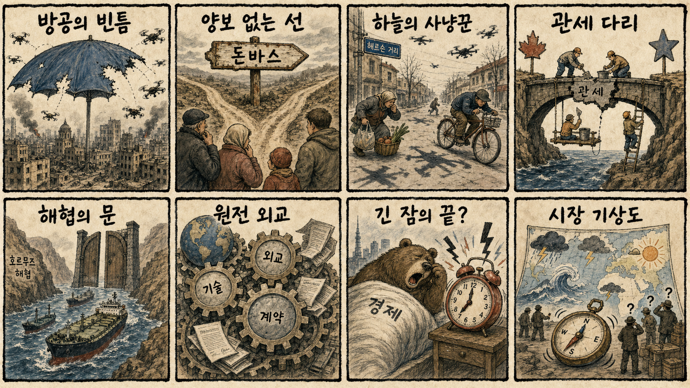
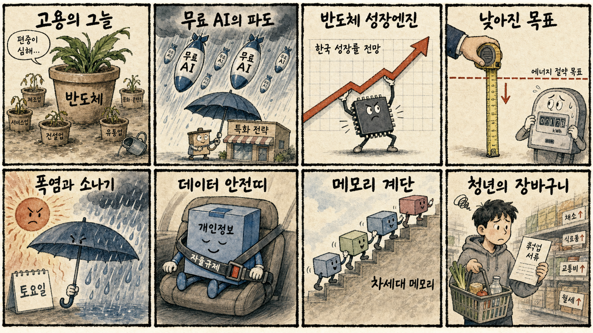

01
팔란티어 +10.32% — 기업용 AI 기대와 성장주 위험선호 회복이 겹치며 두 자릿수 상승했습니다
내용요약 172.01달러로 마감했습니다. 기업용 AI 기대와 성장주 위험선호 회복이 겹치며 두 자릿수 상승했습니다.
예상여파 AI 소프트웨어 관심을 높이지만 급등 뒤 추격 위험도 커졌습니다.
MORNING_BRIEFING_20260808
작성 시각: 2026-08-08 06:37 KST · 직전 미국 정규장과 2026-08-08 KST 당일 공개 기사 기준
직전 미국 정규장인 8월 7일에는 다우 +0.28%, S&P 500 +0.62%, 나스닥 +1.30%로 반등했고 S&P 500은 사상 최고치로 마감했습니다. 고용지표 부진이 금리 부담을 낮추고 기술주 위험선호를 되살렸습니다. 한국은 8월 7일 KOSPI -0.60%, KOSDAQ -0.36%로 약세였고 토요일인 오늘은 휴장입니다. 다음 거래일에는 미국 기술주 강세가 우호적이지만 국제유가와 국내 대형 반도체의 높은 변동성을 함께 봐야 합니다.
| 지수 | 종가 | 등락률 | 한국 증시 영향 |
|---|---|---|---|
| 다우존스 | 54,036.93 | +0.28% | 경기민감 심리의 제한적 회복 |
| S&P 500 | 7,757.64 | +0.62% | 사상 최고치로 위험선호 개선 |
| 나스닥 종합 | 26,690.62 | +1.30% | 반도체·성장주 심리에 우호적 |
기술주 중심으로 위험선호가 회복됐습니다.
고용 둔화가 금리 부담을 낮췄습니다.
토요일로 다음 거래일 영향에 반영됩니다.
휴장일이며 검증 표본도 부족해 관망합니다.
8월 7일 보고서는 수급·컨센서스·30건 이상 유사 조건 보정 표본과 손익비 문턱을 동시에 통과한 종목이 없어 공식 추천을 내지 않았습니다. 따라서 8월 7일 실제 시가를 사후 진입 기준으로 계산할 종목이 없으며 게시 당시 판단을 바꾸지 않습니다.
| 지수 | 종가 | 등락률 | 기준일 |
|---|---|---|---|
| 다우존스 | 54,036.93 | +0.28% | 미국 08/07 |
| S&P 500 | 7,757.64 | +0.62% | 미국 08/07 |
| 나스닥 종합 | 26,690.62 | +1.30% | 미국 08/07 |
| KOSPI | 6,258.77 | -0.60% | 한국 08/07 |
| KOSDAQ | 798.81 | -0.36% | 한국 08/07 |
미국 기술주 반등 연계 반도체·AI 인프라, 클라우드 보안, 데이터센터 네트워크, 방산·드론 대응
국제유가 민감 항공·화학, 고용 둔화 영향 내수소비, 급등 후 과열 반도체, 금리 방향에 민감한 고밸류 종목
내용요약 172.01달러로 마감했습니다. 기업용 AI 기대와 성장주 위험선호 회복이 겹치며 두 자릿수 상승했습니다.
예상여파 AI 소프트웨어 관심을 높이지만 급등 뒤 추격 위험도 커졌습니다.
내용요약 31.13달러로 마감했습니다. AI 서버 관련주로 매수세가 유입되며 강하게 반등했습니다.
예상여파 국내 서버·냉각 연결주에 우호적이나 변동성이 큰 종목군입니다.
내용요약 214.42달러로 마감했습니다. 클라우드 보안 수요 기대와 기술주 강세 속 상승했습니다.
예상여파 AI 시대 보안 지출의 방어력을 보여주지만 밸류에이션 점검이 필요합니다.
내용요약 328.58달러로 마감했습니다. 성장주 선호 회복에 힘입어 상승 마감했습니다.
예상여파 고변동 기술주 심리를 지지하지만 개별 수요와 마진은 별도 변수입니다.
내용요약 354.30달러로 마감했습니다. 기술주 강세장에서도 상대 약세를 보였습니다.
예상여파 대형 AI 플랫폼 내부에서도 실적·규제·투자비에 따른 차별화가 이어짐을 보여줍니다.
오늘은 토요일로 한국 증시가 열리지 않습니다. 다음 거래일에는 나스닥 +1.30%와 S&P 500 최고치가 반도체·성장주 심리를 돕겠지만, 8월 7일 SK하이닉스 -4.88%와 KOSPI -0.60%에서 확인된 국내 변동성은 남아 있습니다. 미국발 반등만 보고 시초가를 추격하기보다 원·달러, 국제유가, 외국인 현·선물 수급, SK하이닉스와 삼성전자의 첫 30분 가격 안정 여부를 함께 확인해야 합니다.
오늘은 추천 없음 — 현금 관망
토요일 휴장으로 당일 시가 진입 기준을 적용할 수 없고, 전일까지의 외국인·기관 수급, 컨센서스 변화, 30건 이상 유사 조건 확률 보정, 예상 손익비 1.5 이상을 동시에 검증한 후보도 없습니다. 임의의 점수와 확률은 제시하지 않습니다.
관심 연결종목 미국 기술주 반등과 연결되는 반도체·AI 인프라, 클라우드 보안, 데이터센터 네트워크는 다음 거래일 관찰 대상일 뿐 매수 추천이 아닙니다. 장전 갭이나 급반등 시 추격매수 금지입니다.
호르무즈 협상과 국제유가의 방향을 봅니다.
금리 기대와 경기 둔화 우려의 균형을 점검합니다.
다음 거래일 대형 반도체 저점과 외국인 수급을 봅니다.
전력 수요와 교통·시설물 안전을 확인합니다.
핵심 요약: AI 시장의 초점이 연산 자원 확보에서 현금흐름과 수익화로 이동하고 있습니다. 무료 생성형 AI 경쟁, SaaS 재평가, 차세대 메모리, 개인정보 자율규제가 기술기업의 다음 경쟁축입니다.
내용요약 AI 기업 주가를 가른 핵심 변수가 컴퓨팅 자원뿐 아니라 투자비 회수와 현금흐름이라는 분석입니다.
예상여파 AI 투자 경쟁이 이어져도 수익화 속도가 느린 기업은 밸류에이션 압박을 받을 수 있습니다.
내용요약 오픈AI의 무료 서비스 확대에 맞서 국내 AI 기업이 산업 특화와 기업 전환 사업으로 돌파구를 찾아야 한다는 보도입니다.
예상여파 범용 서비스의 가격 경쟁이 심해져 국내 기업은 데이터·업무 특화와 유료 고객 확보가 중요해집니다.
내용요약 매출 증가에도 일부 SaaS 기업 가치가 크게 낮아지며 AI 전환기에 기존 구독형 소프트웨어 모델이 시험받는다는 보도입니다.
예상여파 AI 기능을 비용 효율과 고객 유지로 연결하지 못한 소프트웨어 기업의 재평가가 이어질 수 있습니다.
내용요약 SK하이닉스가 계층형 메모리 기반 AI 인프라 해법과 차세대 낸드 기술을 공개했다는 보도입니다.
예상여파 AI 저장장치와 메모리 계층 경쟁이 확대되지만 실제 고객 채택과 양산 일정이 사업 성과를 가릅니다.
내용요약 한국온라인쇼핑협회가 개인정보 보호를 위한 업계 자율규제단체 지정을 추진한다는 보도입니다.
예상여파 AI·커머스 데이터 활용이 늘수록 보안 기준과 사업자의 책임 비용이 함께 높아질 수 있습니다.
핵심 요약: 우크라이나 전쟁의 방공·영토 쟁점이 장기화를 가리키는 가운데 러시아의 원전 외교, 북미 관세 협상, 호르무즈 유가가 안보와 시장을 동시에 흔들고 있습니다.
내용요약 러시아의 공격이 우크라이나 방공망의 빈틈을 파고들며 나토의 방어 체계에도 우려를 키운다는 보도입니다.
예상여파 방공·드론 대응 투자가 확대되고 유럽 안보 비용과 전쟁 장기화 위험이 커질 수 있습니다.
내용요약 여론조사에서 우크라이나인의 다수가 돈바스 영토 할양에 반대하고 전쟁을 견디겠다고 답했다는 보도입니다.
예상여파 휴전 협상의 정치적 공간이 좁아져 전쟁과 제재의 장기화 가능성이 높아질 수 있습니다.
내용요약 러시아가 글로벌 사우스를 대상으로 원전 외교를 강화해 한국의 해외 수주 경쟁에 변수가 된다는 보도입니다.
예상여파 금융·연료·운영을 묶은 국가 간 경쟁이 심해져 한국 원전 수출의 가격과 외교 전략이 중요해집니다.
내용요약 캐나다와 미국이 관세 갈등을 낮추기 위한 잠정 합의를 논의한다는 보도입니다.
예상여파 합의가 구체화되면 북미 공급망 불확실성이 줄지만 협상 조건이 확인될 때까지 변동성은 남습니다.
내용요약 호르무즈 해협 관련 협상 불확실성이 국제유가 상승세를 지지한다는 보도입니다.
예상여파 에너지 수입국의 물가와 운송 비용 부담이 커지고 정유·항공·화학 업종의 차별화가 이어질 수 있습니다.

핵심 요약: 반도체 호황이 성장률 전망을 높이지만 고용 확산은 약하고 에너지 효율 과제도 남아 있습니다. AI 경쟁력과 개인정보 보호를 강화하는 동시에 폭염·호우 대응이 필요한 주말입니다.
내용요약 42개국의 인공지능 경쟁력을 비교하는 세계 AI 순위가 공개됐다는 보도입니다.
예상여파 한국은 인재·연산 인프라·산업 적용력의 상대 위치를 점검하고 취약 항목 투자를 구체화할 필요가 있습니다.
내용요약 반도체 중심 성장에도 하반기 고용 증가 전망이 둔화해 청년과 내수 업종의 부담이 크다는 보도입니다.
예상여파 수출 호조가 소비와 고용으로 충분히 번지지 않으면 체감경기 회복이 지연될 수 있습니다.
내용요약 해외 투자은행들이 반도체 호황을 근거로 한국 성장률을 평균 3.2%로 전망했다는 보도입니다.
예상여파 수출과 세수 기대에는 긍정적이지만 반도체 편중과 업황 변동 위험도 함께 관리해야 합니다.
내용요약 한국이 에너지 감축 목표를 달성하지 못한 뒤 목표치를 낮췄다는 보도입니다.
예상여파 전력망 투자와 효율 개선이 늦어지면 데이터센터 확대와 폭염기에 비용 부담이 더 커질 수 있습니다.
내용요약 전국에 35도 안팎의 무더위가 이어지고 일부 지역은 소나기, 동해안은 강한 비가 예보됐습니다.
예상여파 전력 수요와 온열질환 위험이 높고 강수 지역은 교통·시설물 안전 점검이 필요합니다.
